Fun with Filters
and Frequencies!
In this project, I explored how images can be processed using 2D convolutions, image gradients and frequency decomposition. As I worked through sharpening, hybrid images and multiresolution blending, I started to see images as more than just a collection of pixels. Different frequency levels can be separated and manipulated, which allows us to create effects such as sharper details, images that change depending on viewing distance and smoother blends between two images.
Convolutions from Scratch
Before using compiled libraries, I first implemented 2D spatial convolution directly
from its mathematical definition. A true convolution requires the kernel $k$
to be flipped horizontally and vertically before sliding it across the image $x$.
To maintain consistent output dimensions (matching SciPy's mode='same'),
I also padded the image with zeros around the boundary. For a kernel of size
$k_h \times k_w$, adding $\lfloor (k_h - 1) / 2 \rfloor$ rows above and $\lfloor k_h / 2 \rfloor$
rows below ensures that even-sized kernels (like $1 \times 2$ difference operators)
remain centered down to the exact pixel.
Four Loops vs. Vectorized Two Loops
I implemented convolution in two ways to compare their performance. The first was a straightforward four-loop version that goes through each pixel and each position in the kernel one at a time. The second used two loops and handled the entire image patch under the kernel at once, allowing NumPy to perform the element-wise multiplications more efficiently.
def conv4(x, k):
padded, flipped = pad(x, k), k[::-1, ::-1]
out = np.zeros_like(x)
H, W = x.shape
kh, kw = k.shape
for i in range(H):
for j in range(W):
for u in range(kh):
for v in range(kw):
out[i, j] += padded[i + u, j + v] * flipped[u, v]
return out
def conv2(x, k):
padded, flipped = pad(x, k), k[::-1, ::-1]
out = np.zeros_like(x)
H, W = x.shape
kh, kw = k.shape
for i in range(H):
for j in range(W):
out[i, j] = np.sum(padded[i : i + kh, j : j + kw] * flipped)
return outRuntime Benchmarks & Boundary Behavior
I tested all three approaches on the same image patch and compared the results against
scipy.signal.convolve2d. Both of my implementations produced the same values
as SciPy up to floating-point roundoff, with a maximum error of ($< 10^{-15}$ max error):
| Filter Kernel | Four Loops | Two Loops (NumPy) | SciPy convolve2d | Max Absolute Error |
|---|---|---|---|---|
| 9 × 9 Box Filter | 42.15 ms | 3.82 ms | 0.14 ms | 8.88 × 10-16 |
| 1 × 2 Horizontal Difference (Dx) | 1.12 ms | 1.94 ms | 0.04 ms | 0.00 |
| 2 × 1 Vertical Difference (Dy) | 1.15 ms | 1.96 ms | 0.04 ms | 0.00 |
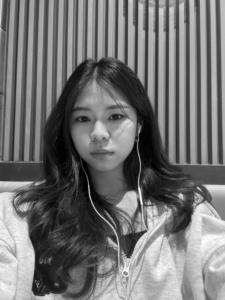
Input Portrait
Grayscale test reference
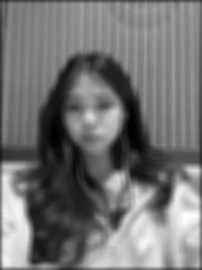
9 × 9 Box Filter
Notice the dark 4px boundary from zero-padding
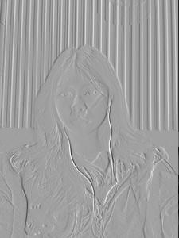
Dx Derivative
Captures vertical edges (face boundaries, frames)
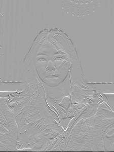
Dy Derivative
Captures horizontal contours (shoulders, blinds)
My Takeaway: Vectorization Overhead & Boundaries
Writing convolution from scratch made me realise that performance is not always as straightforward as “fewer loops = faster code.” For the 9×9 box filter, moving the 81 element-wise multiplications into NumPy gave us an 11× speedup, which made the benefits of vectorization very clear. However, I found that this advantage did not always apply. For very small kernels, the four-loop implementation was actually faster than the two-loop version because each NumPy slice and sum still comes with a fixed overhead inside Python. This was a useful reminder that the best implementation depends on the size and context of the problem, rather than simply following a rule like “always vectorize.” We also saw how a seemingly small design choice, such as padding, can noticeably affect the final image. Zero padding effectively treats everything outside the photo as black, which creates a dark border when the image is blurred. For edge detection, this becomes especially important, since we want the filter to respond to the actual image rather than an artificial boundary. Using symmetric reflection gives the filter more realistic information at the edges and avoids introducing these unwanted border effects.
Finite Difference Operator
In a digital image, edges correspond to sharp steps in luminance. I approximate continuous directional derivatives using finite difference operators $D_x = [1, -1]$ and $D_y = [1; -1]$. Convolving with $D_x$ calculates how brightness changes from left to right ($\frac{\partial I}{\partial x}$), while $D_y$ tracks changes top to bottom ($\frac{\partial I}{\partial y}$). Combining both into the gradient magnitude $\|\nabla I\|$ gives us an edge map independent of orientation:

Original Cameraman
512 × 512 grayscale input
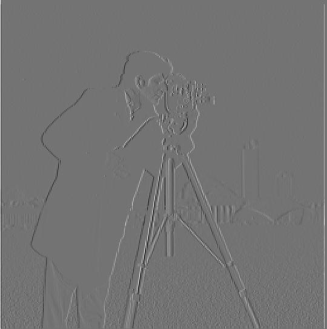
$\partial I / \partial x$
Vertical structural contours
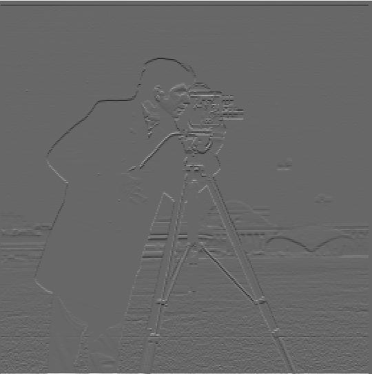
$\partial I / \partial y$
Horizontal edges & horizon line
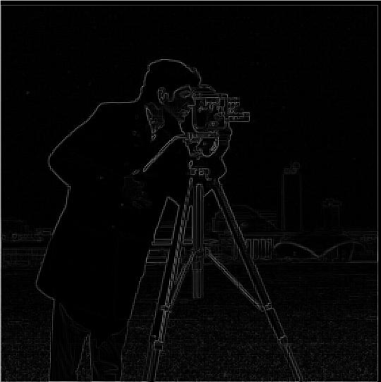
Gradient Magnitude
Full continuous edge energy
The Threshold Dilemma: Grass vs. Skyline
Turning the continuous gradient values into a binary edge map meant choosing a suitable threshold $\tau$. I found this harder than expected because the threshold affected very different parts of the image in similar ways. For example, the grass had many small, sharp changes in intensity from the individual blades, producing gradient values that were just as high as the edges of the distant buildings across the river. This made it difficult to remove the noisy grass without also losing some of the important edges in the background.
$\tau = 0.10$
I was able to capture the distant skyline, but the grass became extremely noisy, with small speckles appearing all over the foreground.
$\tau = 0.22$
This gave the most useful balance. The cameraman’s silhouette, coat seams and tripod remained visible, while the amount of noise from the grass was much more manageable.
$\tau = 0.35$
The grass noise was almost completely removed, but this also caused some important details to disappear. The thin tripod legs were no longer detected and much of the background architecture was lost.
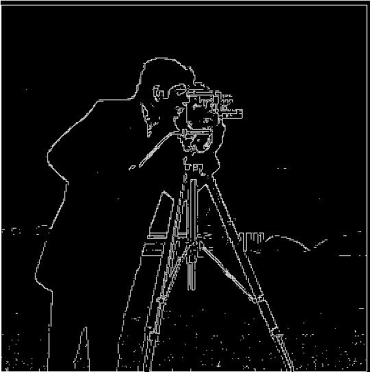
Binarized Edge Map ($\tau = 0.22$)
Solid figure silhouette with inevitable residual grass texture.
My Takeaway: The Unforgiving Nature of High-Pass Filters
Working with the raw difference filters made me realise how sensitive high-pass filters can be. They pick up any sharp change in intensity, whether it is a meaningful boundary or just small details like grass texture and sensor noise. I found that there was no single threshold that could cleanly separate the two. Lowering the threshold kept more of the skyline but introduced a lot of noise in the foreground, while raising it removed the noise but also caused important edges to disappear. This showed me that simply adjusting the threshold is not enough. To get cleaner and more useful structural edges, I first need to reduce the high-frequency noise before applying the edge detector.
Derivative of Gaussian (DoG) Filter
To reduce the noise, I first smooth the image using a 2D Gaussian filter $G_\sigma$ ($\sigma = 1.5, k_{\text{size}} = 9$). This helps soften the small intensity changes caused by texture and noise before detecting edges. Since convolution is associative, I can also combine the Gaussian filter and difference operator into a single filter. This gives the Derivative of Gaussian (DoG) filters, which produce the same result as first blurring the image and then applying the difference operator, but in one convolution step.
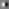
$DoG_x$ Filter
Pre-differentiated horizontal operator
$DoG_y$ Filter
Pre-differentiated vertical operator
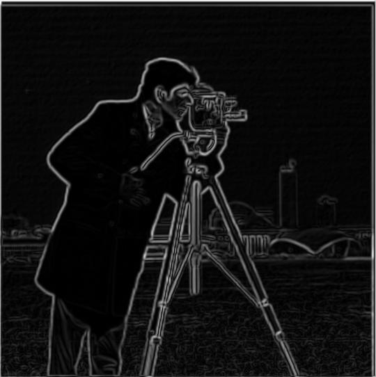
DoG Gradient Magnitude
Smooth, continuous edge response
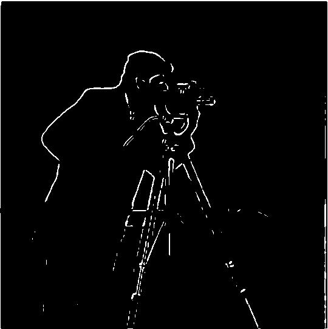
DoG Binary Edge Map ($\tau = 0.12$)
Connected boundaries, clean grass field
Associativity in Code
I tested whether the two approaches really produced the same result by subtracting the two-pass output from the single-pass DoG output. The maximum differences were extremely small: $$\max |I_{x, \text{two-pass}} - I_{x, \text{DoG}}| = 0.00 \times 10^0$$ $$\max |I_{y, \text{two-pass}} - I_{y, \text{DoG}}| = 5.55 \times 10^{-17}$$ These differences are effectively zero and are within floating-point precision, confirming that the two approaches are mathematically equivalent in practice.
Cleaner Contours at Lower Thresholds
The Gaussian blur also made a noticeable difference to the edge map. By averaging nearby pixels, it reduces random noise, although it also spreads out sharp edges across a few pixels. After smoothing, the peak gradient dropped from $\approx 0.88$ to $0.24$. This meant I could use a much lower threshold of $\tau = 0.12$ while still avoiding most of the grass noise. The resulting edge map produced much smoother and more continuous outlines of the jacket and tripod, without the clutter I saw when using the raw difference filters.
Gradient Orientation in HSV Color Space
The gradient vector $(I_x, I_y)$ describes both the strength of an edge and its direction ($\theta = \text{atan2}(I_y, I_x)$). To visualize this, I implemented a quadrant-aware angle calculation from scratch in compute_gradient_orientation(). I then mapped the resulting angles to the HSV color space, allowing different colors to represent different edge directions and making the overall gradient pattern easier to see.
Input Image
Magnitude (Value channel)
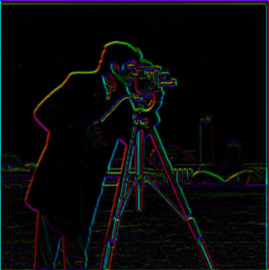
HSV Gradient Orientation Map
Hue encodes angle $\theta$; brightness reflects edge strength.
My Takeaway: Seeing Vector Symmetry
Visualizing the gradient direction with color made the concept much easier for me to understand. I could see that a thin edge, such as a tripod leg, appears in complementary colors on its two sides. For example, red on one side and cyan on the other. This happens because the brightness changes in opposite directions across the same boundary. I also noticed that smooth regions appear black because they have very small gradient magnitudes. Seeing these patterns in the image helped me connect the mathematical gradient vectors to something I could actually observe.
Image Sharpening via Unsharp Masking
A Gaussian blur acts as a spatial low-pass filter, smoothing out fine details while keeping the larger structures in the image. I can then subtract the blurred image from the original to isolate the high-frequency details, such as edges and fine textures. Unsharp masking strengthens these details by scaling them by a factor of $\alpha$ and adding them back to the original image. Since convolution is linear, I can combine these steps into a single convolution using the kernel $(1 + \alpha)\delta - \alpha G$:
Evaluation on the Taj Mahal
Original Input
Softly focused reference
Gaussian Blur
$\sigma = 2.5$
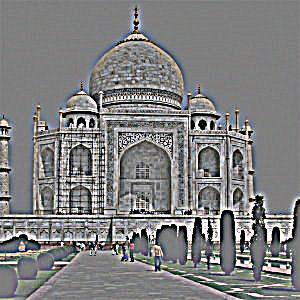
High Frequencies
Shifted by $+0.5$ mid-gray
Sharpened ($\alpha = 2.0$)
Crisp dome carvings and minarets
Tuning the Sharpening Strength ($\alpha$)
I tested sharpening factors from subtle ($\alpha = 0.5$) to extreme ($\alpha = 5.0$) on the Taj Mahal ($\sigma = 1.5$):
$\alpha = 0.5$
Natural, subtle definition
$\alpha = 1.0$
Clean edge enhancement
$\alpha = 2.5$
Aggressive local contrast
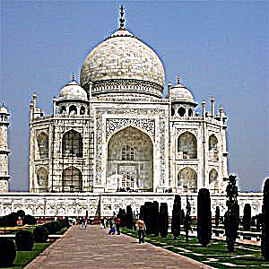
$\alpha = 5.0$
Severe haloing and pixel clipping
Sharpening Library Details & Street Scenes

Library (Original)
Library Sharpened ($\alpha = 2.5$)
Sharpening fine details in shelves, signs and books
Blocks (Original)
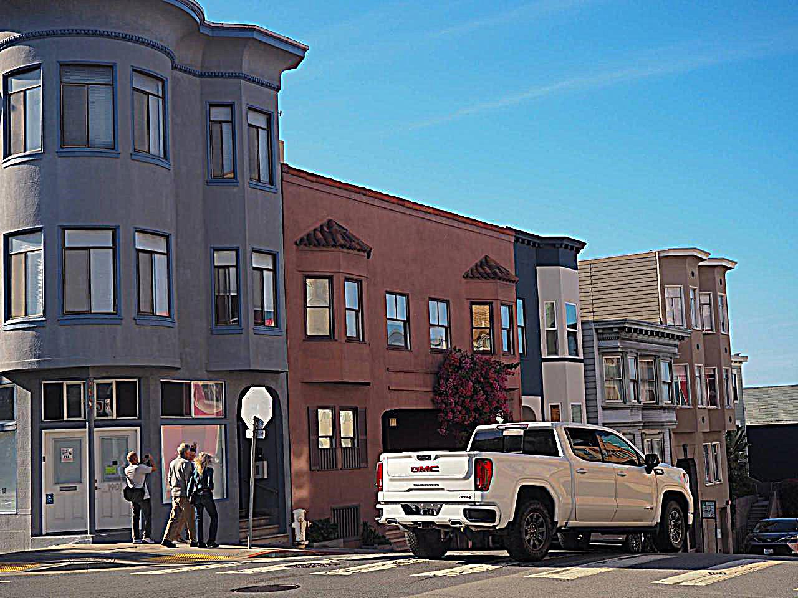
Blocks Sharpened ($\alpha = 2.5$)
Sharpening details in buildings and cars
The Blur-and-Resharpen Test: Can We Reclaim Lost Data?
To test the limits of unsharp masking, I degraded a sharp photograph with a Gaussian blur ($\sigma = 2.0$), then attempted to recover the original sharpness using $\alpha = 2.5$:
1. Original Sharp Ground Truth
Fine surface details intact
2. Artificially Blurred ($\sigma = 2.0$)
High spatial frequencies removed
3. Re-Sharpened Result ($\alpha = 2.5$)
Higher contrast, but small lost details remain missing
My Takeaway: The Illusion of Sharpness
This test demonstrated an important limitation of sharpening: unsharp masking creates the appearance of sharpness by increasing local contrast, but it cannot recover high-frequency details that have already been lost. Gaussian blurring reduces higher spatial frequencies, and beyond roughly 0.25 cycles/pixel, the attenuation is already close to zero. Since multiplying a near-zero frequency by any scale factor still gives a near-zero result, unsharp masking can only strengthen the details that remain. This helped me understand why sharpening can make edges look clearer, but cannot bring back fine textures that were completely removed by blurring.
Hybrid Images
Building on the work of Oliva, Torralba and Schyns (SIGGRAPH 2006), I explored how hybrid images take advantage of the way we perceive different spatial frequencies. A hybrid image combines the low-frequency information from one image with the high-frequency details from another. When viewed up close, the high-frequency details are more noticeable, while viewing the image from a distance makes the broader low-frequency structure more prominent:
Pair 1: Derek & Nutmeg (The Provided Baseline)
I aligned the images using pupil landmarks with align_images(), using cutoffs of
$\sigma_{\text{low}} = 9.0$ for Derek and $\sigma_{\text{high}} = 3.5$ for Nutmeg. When viewed
up close, Nutmeg’s whiskers, fur and eyes stand out because of the high-frequency details. As
I stepped back or viewed the image as a small thumbnail, Derek’s face became more noticeable
as the low-frequency structure dominated.

Derek (Low SF Target)

Nutmeg (High SF Target)
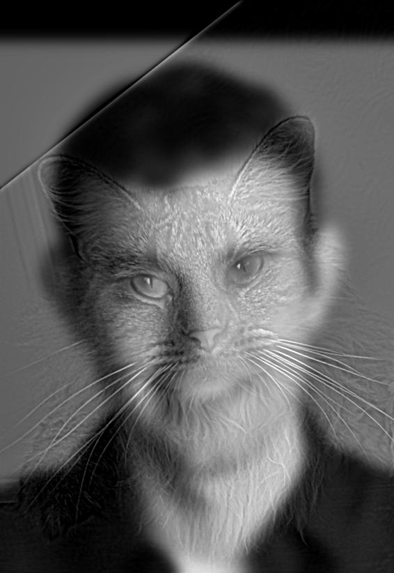
Hybrid Image (Nutmeg up close)
Far Distance View (Derek emerges)
Frequency Domain Validation (2D Log-Magnitude FFT)
To better understand what was happening at each stage, I also verified the frequency separation using 2D FFT log-magnitude spectra.
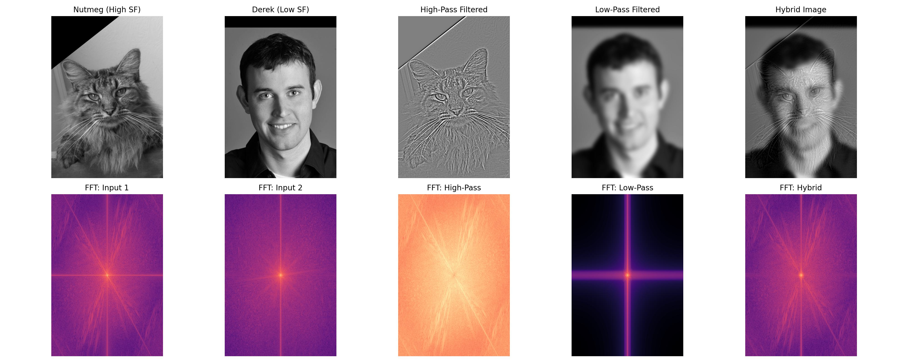
Top Row: Aligned Inputs, High-Pass filtered, Low-Pass filtered, and Hybrid Image.
Bottom Row: Corresponding 2D Fourier log-magnitude spectra.
Low-Pass Filter
High spatial frequencies in the outer region are removed, leaving most of the energy concentrated in a compact, bright central disc.
High-Pass Filter
The central DC spike is suppressed, removing the low frequencies while preserving the higher-frequency details in the outer ring.
Combined Spectrum
The resulting spectrum contains both components, with Derek contributing the low-frequency structure and Nutmeg contributing the high-frequency details.
Pair 2: Portrait & Bear
Blending the low frequencies of my portrait ($\sigma_{\text{low}} = 8.0$) with the high-frequency details of a bear ($\sigma_{\text{high}} = 2.5$) wearing a face mask, aligned across the eye pupils. Up close, the bear’s mask details are more visible, creating the illusion of me wearing a mask. While viewing the image from a distance, my overall facial structure overrides the illusion.
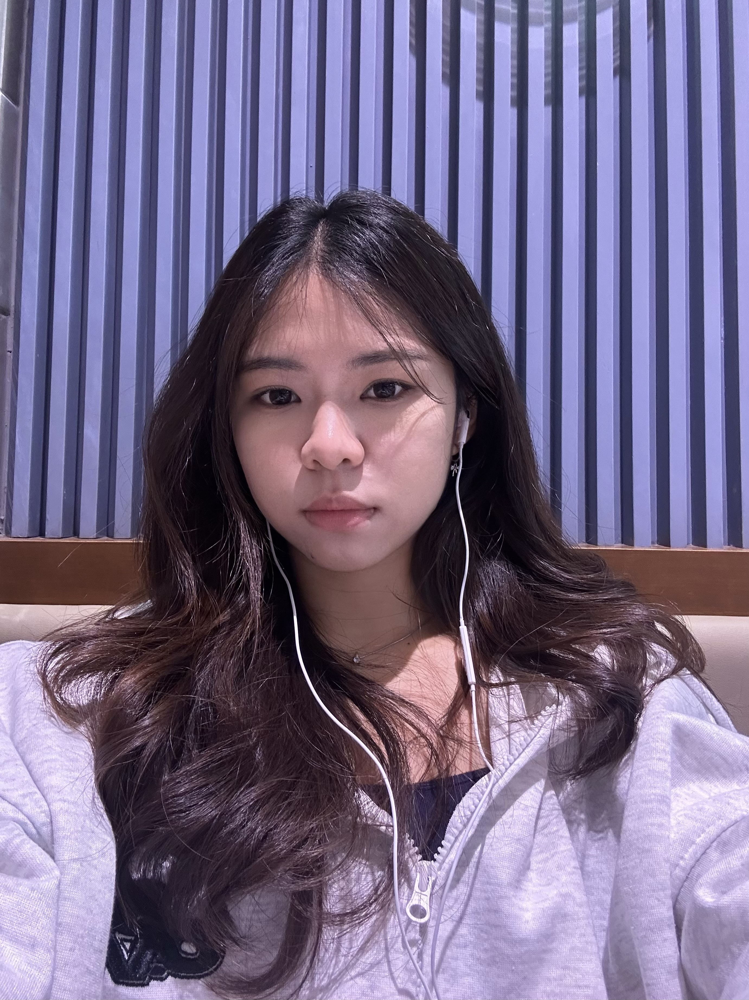
Portrait (Low SF)
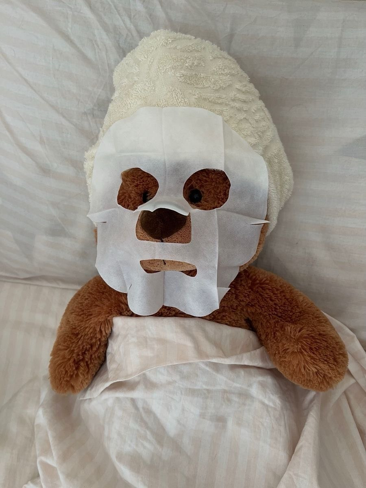
Bear (High SF)
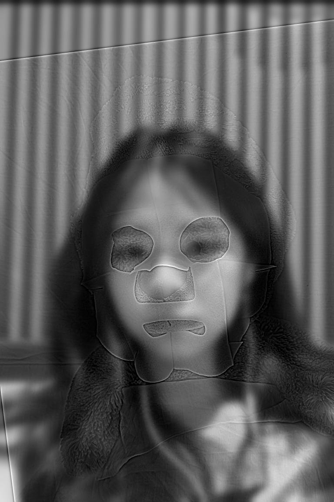
Hybrid Image (Bear with mask up close)
Far Distance View (My face)
Pair 3: Milk Carton & Ice Cream Cone (Failure Analysis)
Blending a popsicle in its packaging with a small glass bottle of milk ($\sigma_{\text{low}} = 8.0, \sigma_{\text{high}} = 3.0$). Up close, the bottle’s shape and fine details are more noticeable, while stepping back makes the broader popsicle packaging more apparent
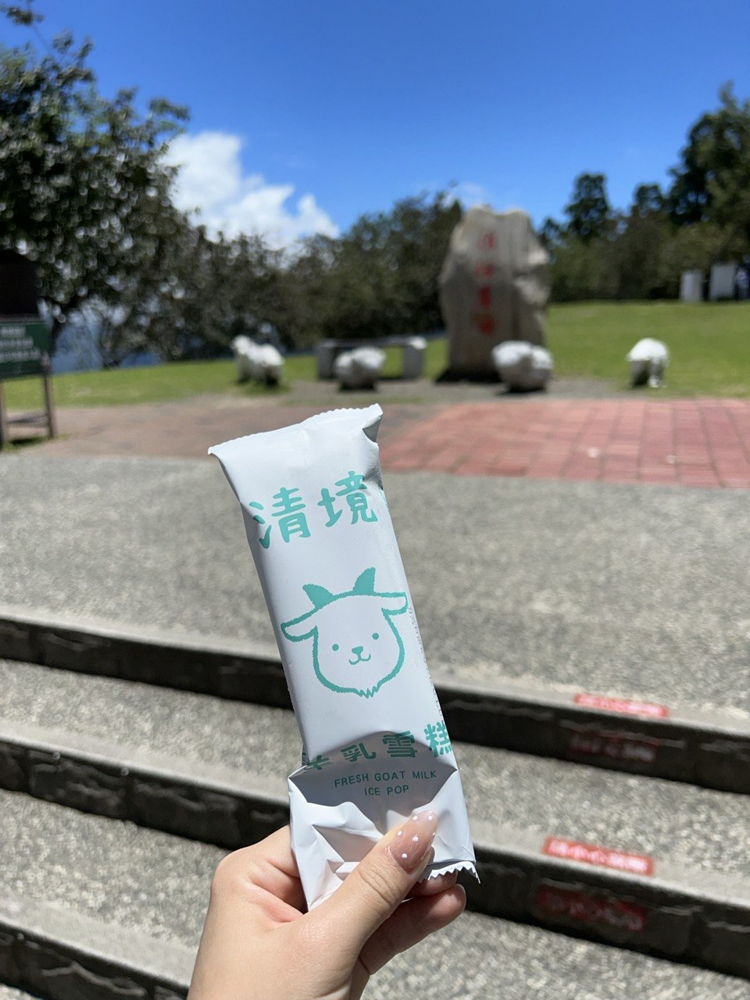
Milk Popsicle (Low SF)
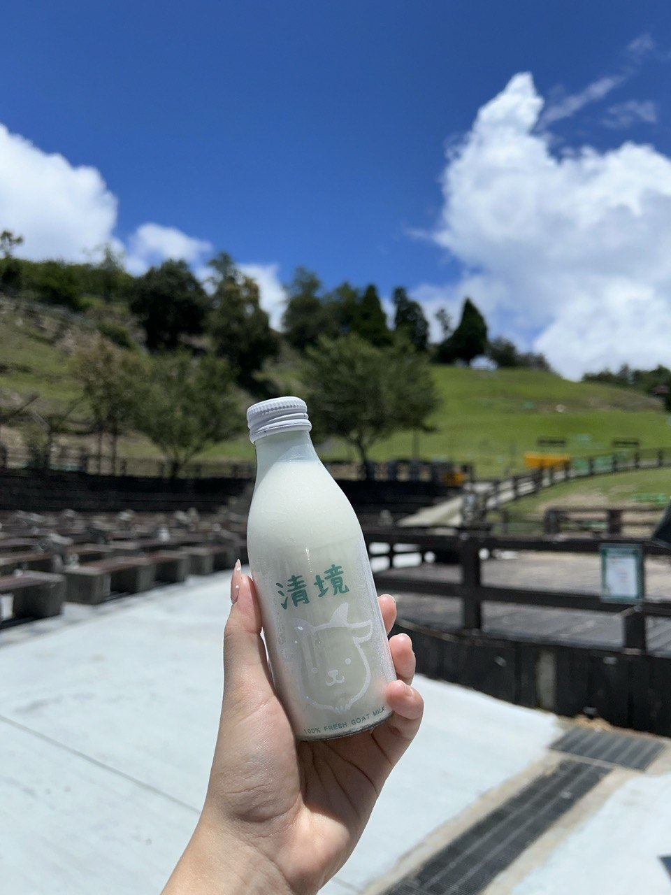
Milk Bottle (High SF)
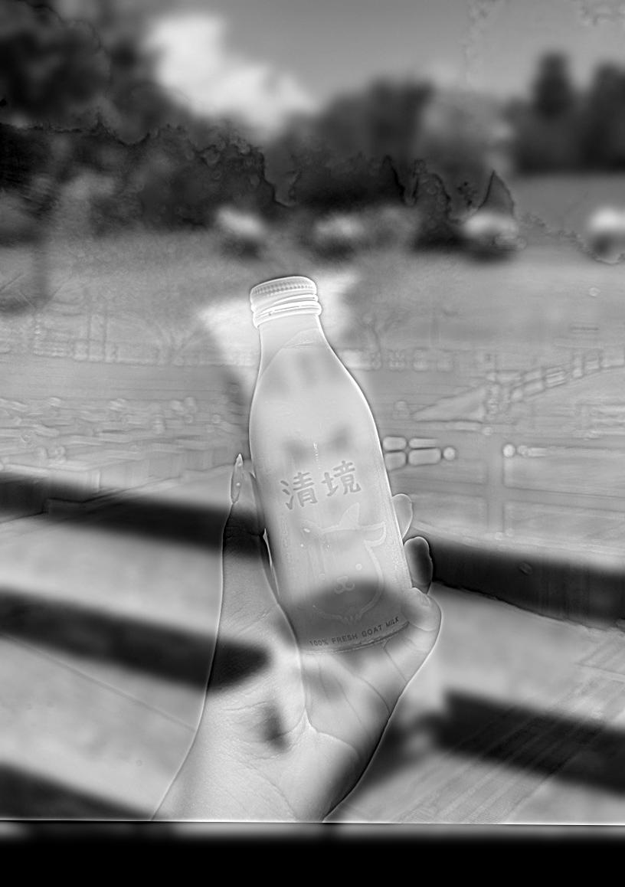
Hybrid Image (Bottle of Milk)
Far Distance View (Milk Popsicle)
Color Analysis in Hybrid Images
I tested whether hybrid images work best in grayscale, with color in the low-pass component only, with color in the high-pass component only, or with color in both:
Color in Low-Pass Only
Derek in color, Nutmeg in grayscale.
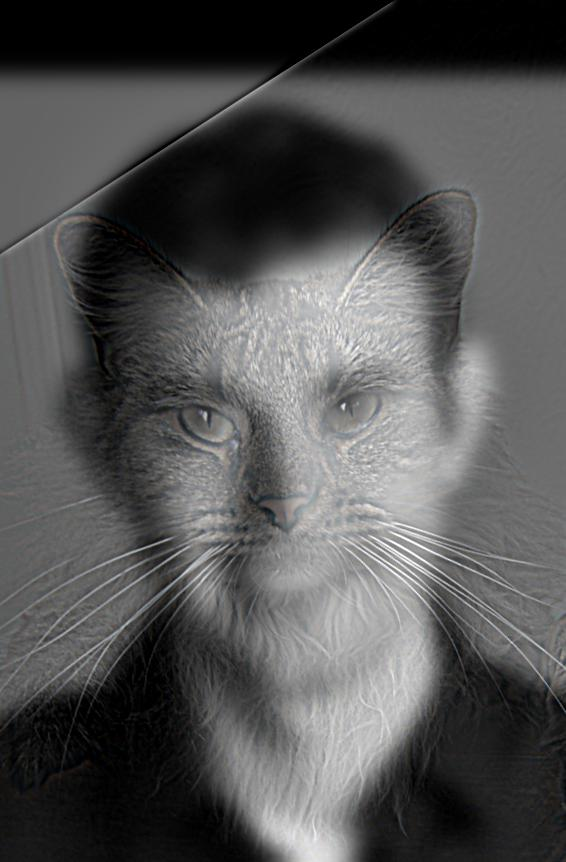
Color in High-Pass Only
Nutmeg in color, Derek in grayscale.
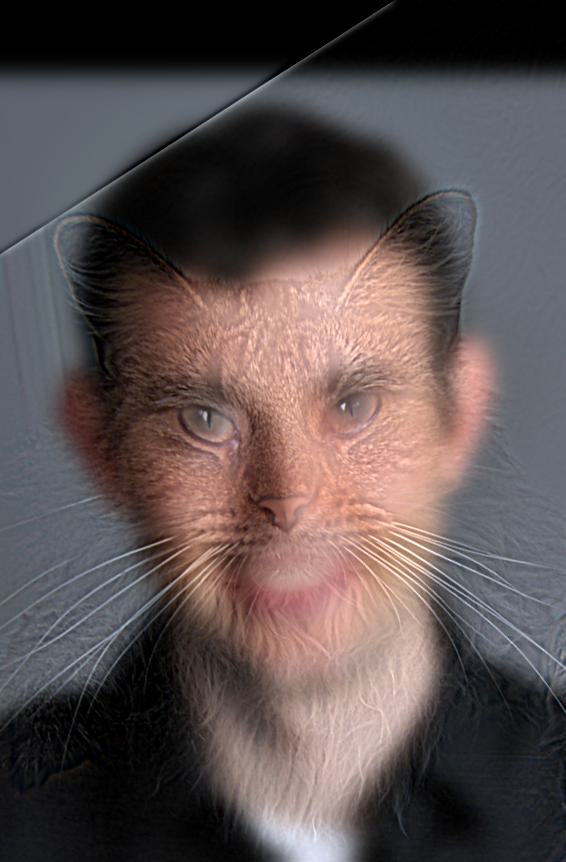
Color in Both Components
Both signals in full RGB.
My Takeaway: Where Does Color Belong?
Working with hybrid images made me realise that color is most useful in the low-pass component. In natural images, much of the color information comes from broad, smooth regions such as skin tones, the sky and background lighting. When high-pass filtering removes these smooth areas, only small traces of color remain around edges, which can sometimes look unnatural. Keeping the color in the low-frequency component helps preserve the overall appearance of the image when viewed from a distance, while allowing the high-frequency details to stand out when viewed up close.
Gaussian and Laplacian Stacks
Unlike image pyramids, which downsample the image grid at each level, an image stack keeps the same pixel dimensions throughout. Level $0$ of the Gaussian stack, $G_0$, is the input image $I$, with $\sigma$ doubling at each step ($\sigma \in [2, 4, 8, 16, 32]$). The Laplacian stack then captures different frequency bands by taking the difference between adjacent Gaussian levels. The final residual $L_N$ contains the lowest-frequency information from the last Gaussian level $G_N$:
Because this construction forms a telescoping sum: $$(G_0 - G_1) + (G_1 - G_2) + \dots + (G_{N-1} - G_N) + G_N = G_0 = I$$ Summing all levels of the Laplacian stack reconstructs the original image with exact mathematical fidelity. The implementation verified this: $$\max |I_{\text{apple}} - I_{\text{reconstructed}}| = 1.11 \times 10^{-16}$$
Replicating Burt & Adelson (1983) Figure 10
I decomposed the classic Apple and Orange into 5-level Laplacian stacks. Band-pass levels are centered around neutral gray ($0.5$) for visualization, while the final low-pass level displays the base luminance:
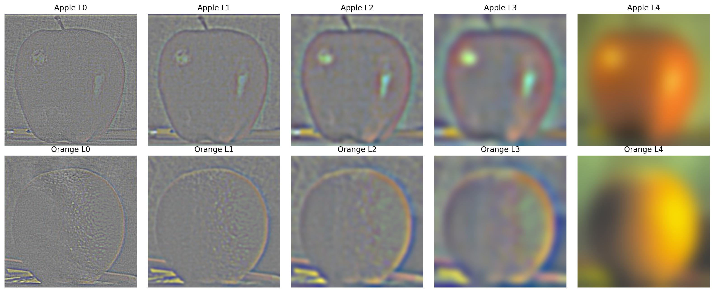
Burt & Adelson Figure 10 Reproduction: Top Row shows Apple Laplacian octaves $L_0 \dots L_4$; Bottom Row shows Orange Laplacian octaves $L_0 \dots L_4$.
High-Pass ($L_0$)
Captures fine surface rind textures, pores on the orange peel and paper texture behind the fruits.
Mid-Pass ($L_1, L_2$)
Preserves the main boundary contours, including the apple’s stem indentation and diffuse specular highlights.
Low-Pass Residual ($L_4$)
Retains the overall volumetric shading, three-dimensional curvature, and broad red-orange color distribution.
Multiresolution Blending (The Oraple & Custom Blends)
Combining images with a sharp binary mask can create visible seam lines, while a simple linear alpha blend can cause unwanted ghosting. Multiresolution spline blending (Burt & Adelson, 1983) avoids these issues by decomposing both input images and the binary selection mask $M$ into multiple frequency levels, allowing the images to be blended smoothly across different scales.
At each frequency level $i$, the Laplacian bands $L_A[i]$ and $L_B[i]$ are combined using the Gaussian-blurred mask weights $G_M[i]$:
1. The Classic Oraple (Vertical Seam)
Blending the left half of the Apple with the right half of the Orange across a vertical step mask:

Apple Input

Orange Input
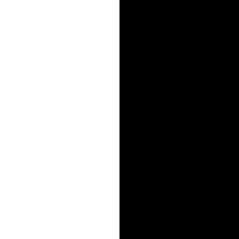
Vertical Mask
The Blended Oraple
Seamless transition with unified curvature
2. Custom Regular Seam: Day into Night Horizon
A vertical seam blend across a beach horizon transitioning from a golden-hour sunset into deep night. Using a 6-level stack ($\sigma_0 = 4.0$) ensures the broad atmospheric sky gradient transitions smoothly over hundreds of pixels while preserving the crisp waterline and sandy beach textures:
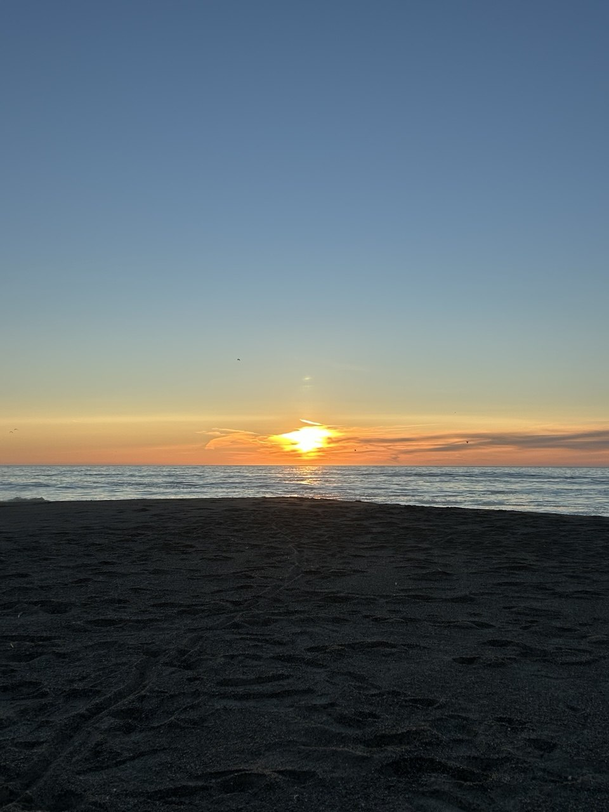
Sunset Scene (Left Image)
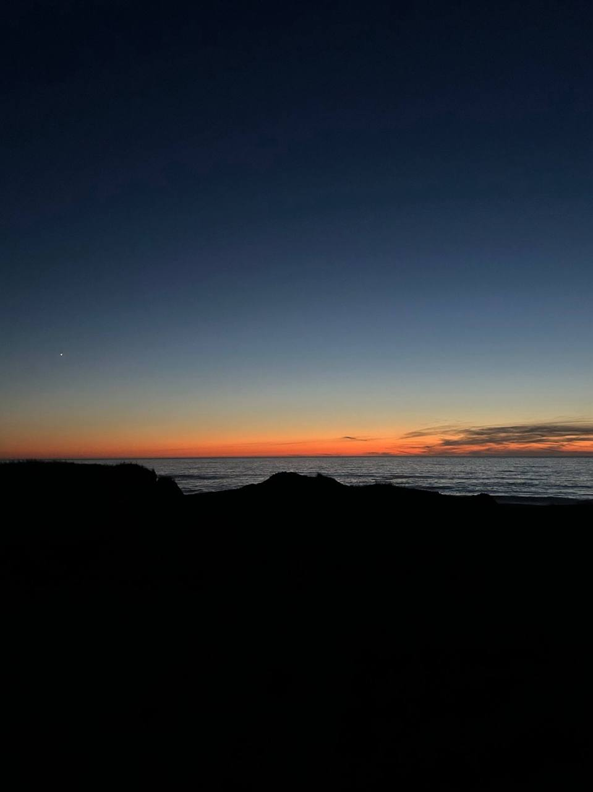
Night Scene (Right Image)
Vertical Step Mask
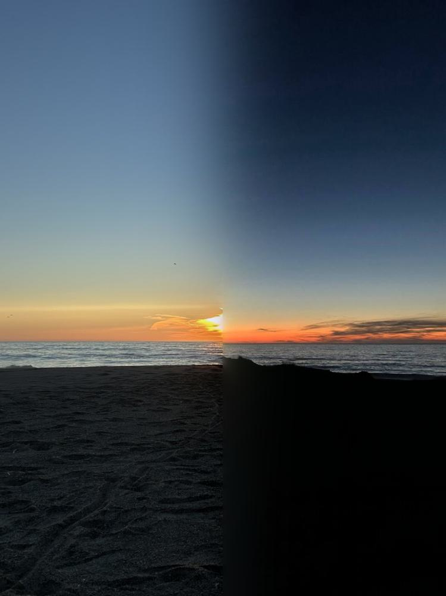
Blended Horizon Seam
Continuous atmospheric sky gradient
3. Custom Irregular Mask Blend: Virtual Clothes Try-On
Blending a striped knit sweater onto a full-body portrait using an irregular binary silhouette mask:
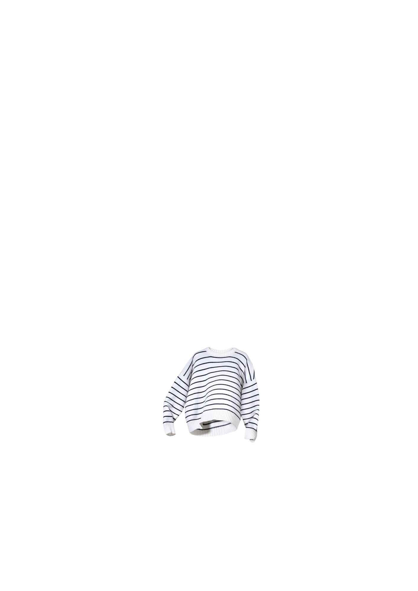
(a) Positioned Sweater
Scaled and aligned to the torso
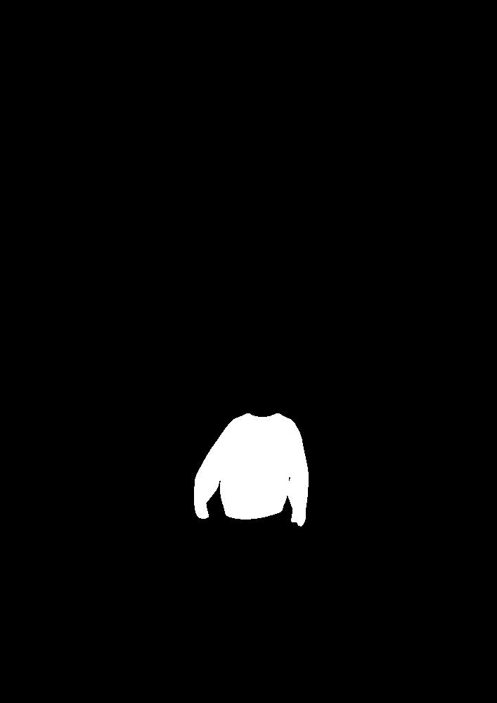
(b) Irregular Mask
Garment silhouette mask
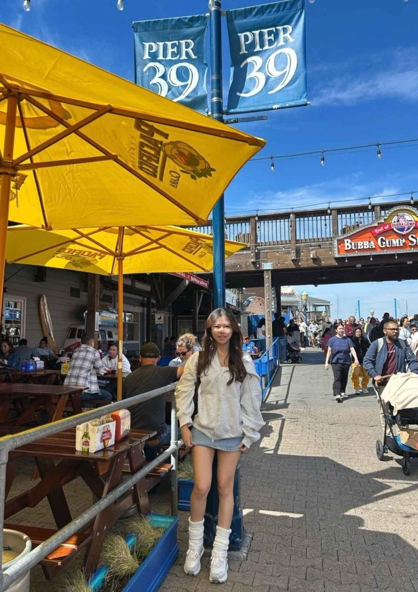
(c) Base Photo
Outdoor portrait
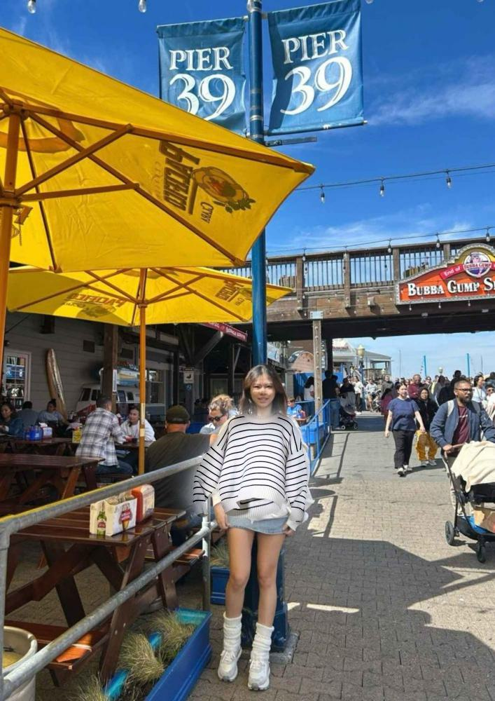
(d) Blended Try-On
Natural fit along shoulders and cuffs
Detailed Frequency Breakdown of the Blend
I replicated the Burt & Adelson Figure 10/11 diagnostics using an irregular blend. Row 1 shows the masked Laplacian bands from the sweater ($G_M[i] \cdot L_A[i]$), Row 2 shows the masked Laplacian bands from the background person ($(1 - G_M[i]) \cdot L_B[i]$), and Row 3 shows the resulting combined blended bands ($L_{\text{blend}}[i]$):
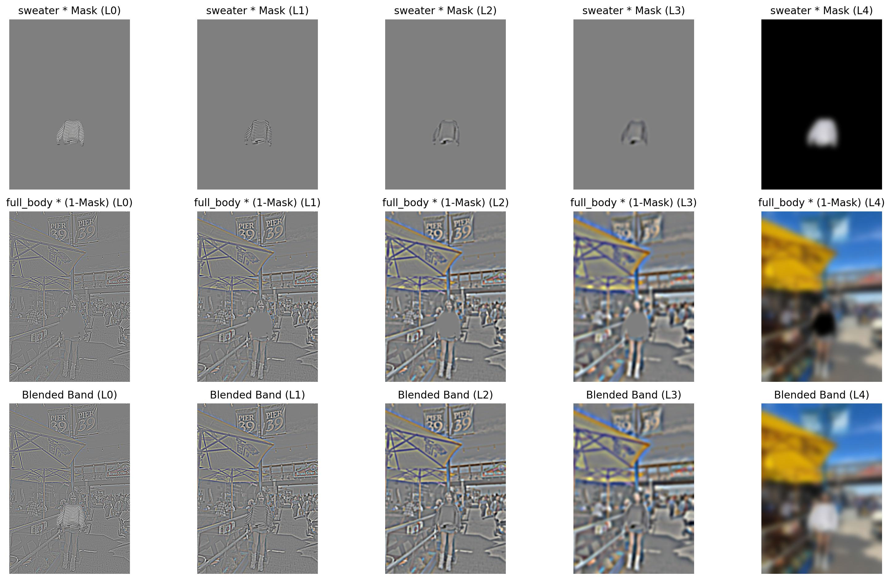
Row 1: Masked sweater details | Row 2: Masked background person | Row 3: Combined blended frequency bands.
My Takeaway: Scale-Dependent Seam Widths
The main idea I took away from Burt & Adelson blending is that the transition width should match the scale of the image features being blended. Fine details, such as the sweater’s knit texture and stripes, remain sharp because the mask transitions over only 1–2 pixels in the high-frequency bands, which avoided noticeable blur or ghosting. In the lower-frequency bands, broader lighting and color differences are blended over much larger distances, allowing the sweater to naturally take on the surrounding scene’s sunlight and shadows. This showed me why blending at multiple scales produces a much smoother result than simply using one fixed transition.
Key Takeaways & Reflections
The Core Lesson: Thinking in Frequencies
What made this project especially rewarding for me was realising that sharpening, hybrid images and multiresolution blending are not three completely separate techniques. They are different ways of working with the same underlying idea: spatial frequency decomposition.
• Sharpening boosts high frequencies already present in the image.
• Hybrid Images combine the low frequencies of one subject with the high
frequencies of another, taking advantage of how our perception changes with viewing distance.
• Multiresolution Blending uses different transition widths at different
frequency scales, keeping fine details sharp while allowing broader colors and lighting to blend smoothly.
Thinking in frequencies also helped me understand some of the issues I encountered during implementation. Sharpening cannot recover details that were completely removed by blurring, since there is no information left to amplify. Similarly, the kernel size and stack depth in multiresolution blending matter because the coarsest levels need to capture broad enough changes in color and lighting for a smooth transition. Overall, this project changed how I think about images. Instead of treating an image as just a grid of individual pixels, I started seeing it as a combination of different spatial frequencies. This gave me a much clearer way to understand not only how these techniques work, but also helps in understanding why certain results succeed or fail.